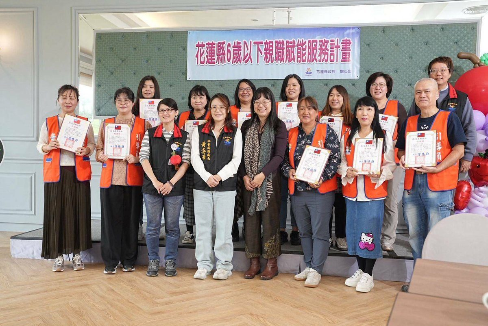
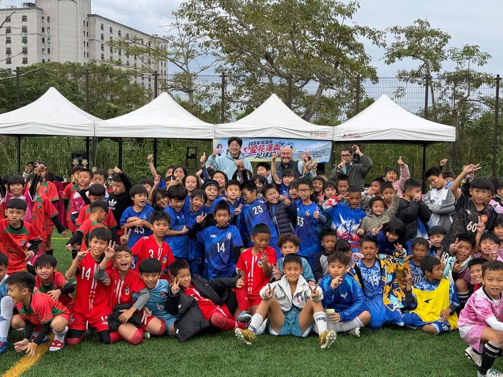
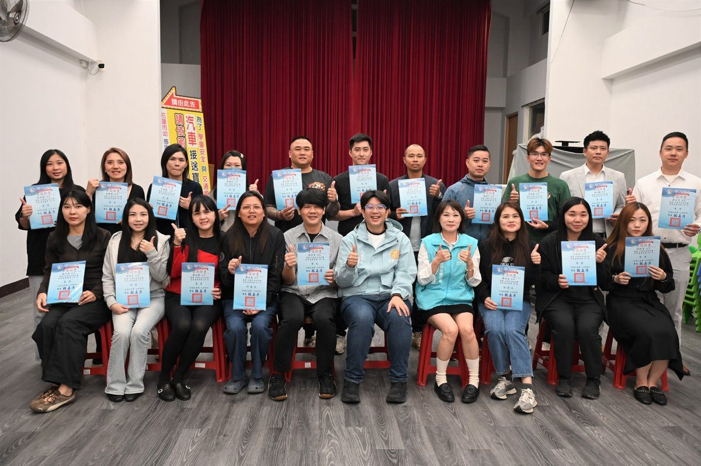
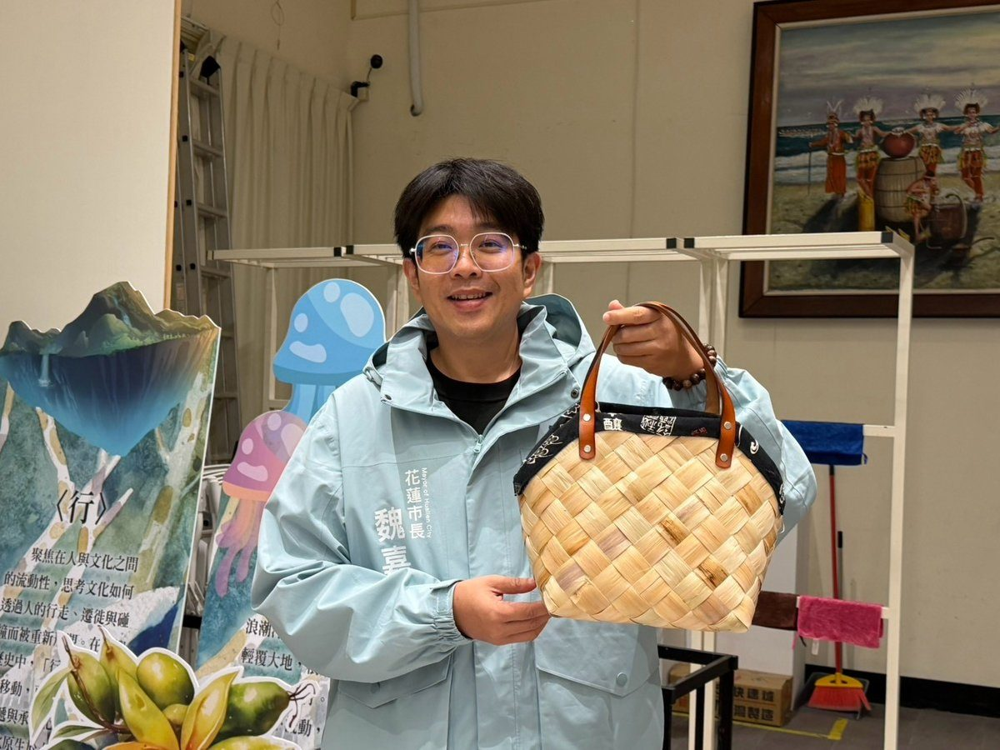
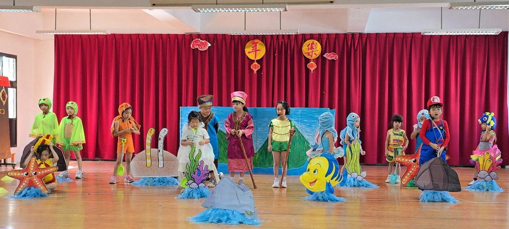

花蓮縣府辦國際移民日餐會 新住民家庭齊聚
迎接12月18日國際移民日，花蓮縣政府21日在花蓮美侖飯店舉辦「我們．這一路－從家鄉到花蓮」新住民家庭共融餐會暨成果發表，以生命故事、影像紀錄與親子展演，分享新住民在花蓮生活、成長與扎根的歷程，縣府期盼讓更多人理解與尊重…
閱讀全文 →迎接12月18日國際移民日，花蓮縣政府21日在花蓮美侖飯店舉辦「我們．這一路－從家鄉到花蓮」新住民家庭共融餐會暨成果發表，以生命故事、影像紀錄與親子展演，分享新住民在花蓮生活、成長與扎根的歷程，縣府期盼讓更多人理解與尊重…
閱讀全文 →
花蓮縣政府21日在花蓮美侖大飯店舉辦兒少保護多元親職教育成果分享暨表揚大會，以情境體驗、換位思考與教具操作，帶民眾從理解孩子出發，並表揚長年陪伴家庭的親職引導員。縣長徐榛蔚感謝這群以專業與耐心陪伴家庭的夥伴，讓照顧者在教…
閱讀全文 →
花蓮慈濟醫院胸腔內科11月21日舉辦「肺阻塞－順暢呼吸．樂活人生」病友會，集結醫師、護理師、營養師、社工師與呼吸治療師跨領域合作，從疫苗防護、營養照護、身心障礙與輔具補助到呼吸訓練，並以卡祖笛吹唱《蘭花草》等歌曲練習氣流…
閱讀全文 →
由花蓮縣體育總會主辦的「115年花蓮市民代表會主席盃匹克球錦標賽」，今（21）日在花蓮市大陳二村匹克球場熱鬧登場，親子組及團體組共18支隊伍參賽。花蓮市長魏嘉彥出席開幕典禮，為選手加油打氣。魏嘉彥表示，匹克球近年受到民眾…
閱讀全文 →
為推廣足球運動，花蓮縣運動推廣協會今（21）日在花蓮市佐倉運動園區舉辦「115年花蓮市愛花蓮盃足球錦標賽」，吸引31支隊伍同場競技。花蓮市長魏嘉彥出席開幕典禮，為選手加油打氣，並表示將持續充實園區設施，提供市民更多元的運…
閱讀全文 →
吉安鄉立圖書館21日上午在慶豐閱覽室舉辦多元閱讀活動，邀請暢銷作家、計程車司機王國春以「平凡中創造非凡」為題開講，分享從國中中輟生、運將到出書作家的人生逆轉歷程，真誠故事感動全場讀者，鄉長游淑貞也到場致意並致贈感謝禮，盼…
閱讀全文 →
冬天「菇」事登場！林業及自然保育署花蓮分署11月27日、12月7日及12月23日，分別在南華、萬榮、玉里工作站推出免費段木香菇栽培推廣課程，從段木挑選、菌種接種到養菌管理與出菇照護全程理論與實作並重，課程免報名，邀請民眾…
閱讀全文 →
花蓮縣政府地方創生輔導團深入秀林鄉加灣部落，訪視在地業者「大竹子走部落」，交流遊程規劃、品牌定位及馬告商品開發，協助部落以煙燻餐桌與獵寮體驗發展特色產業，逐步建立可持續經營模式。…
閱讀全文 →花蓮縣政府推動花64線2k+000至22k+500彎道改善及道路安全提升工程（第二期），榮獲行政院公共工程委員會第26屆公共工程金質獎品質優良獎「優等」，是土木類第二級全組唯一最高等第，頒獎典禮12月2日舉行，展現偏鄉交…
閱讀全文 →
花蓮市公所20日晚間在大陳社區舉辦大陳文化節「裊裊馨香繫海島．尋味大陳逛好市」系列活動，迎接農曆十月十三日真君壽誕，散居各地的大陳遊子返鄉祝壽。市長魏嘉彥偕主任秘書翁美華、所長宋瑜華出席，承天文化藝陣與台北木柵文心會踩街…
閱讀全文 →
一場海外義診結束後，病人的後續照顧該怎麼辦？2024年，花蓮慈濟醫院醫療團隊前往菲律賓義診時，將一位疑似罹患血液疾病的民眾，轉介給曾經來臺接受訓練的菲律賓醫師，讓跨國醫療人才培育的成果，實際運用在當地醫療服務。這樣的醫療…
閱讀全文 →
花蓮慈濟醫院「腦中風中心」通過醫策會疾病照護品質再認證，「冠狀動脈疾病團隊」也以救心成果獲肯定。院方2025年收治693名腦中風病患，更是全花蓮縣唯一24小時執行動脈內取栓術的醫院，在山海之間守護東部鄉親的腦血管與心血管…
閱讀全文 →
台灣區藝品禮品輸出業同業公會一行逾百人，19日由理事長林孟盛率團來到花蓮，展開兩天一夜的會員旅遊，走訪多處特色景點，以實際行動支持花蓮觀光。花蓮市長魏嘉彥今（20）日上午特地前往美侖大飯店，向即將結束旅程的訪團表達歡迎與…
閱讀全文 →
花蓮市立幼兒園昨(19)日前選出第28屆家長委員共22名，花蓮市長魏嘉彥前往幼兒園頒發當選證書。魏市長表示，家長會的支持是教育重要推手，期盼未來一起攜手同心，為學校校務發展與學生健康成長而努力。…
閱讀全文 →
吉安鄉立幼兒園今（20）日於校園辦理「場所消防防護演練」，結合吉安婦宣大隊及消防局吉安分隊，帶領100餘位幼兒透過情境短劇、防火宣導、煙霧體驗及實際滅火操作，學習正確防火觀念與火災應變技巧，讓消防安全教育從小扎根。…
閱讀全文 →
新城警分局富世派出所員警11月10日晚間行經臺8線185公里處，攔查一輛後車斗違規載人的自小貨車，發現陳姓駕駛神情恍惚，毒品唾液快篩呈甲基安非他命陽性，車內查獲安非他命及海洛因各1包，依道路交通管理處罰條例新制開罰15萬…
閱讀全文 →
花蓮市選務作業中心今（19）日在花蓮市公所簡報室舉辦第二十屆市長選舉公辦政見發表會，3名候選人全數到場，依抽籤順序各以15分鐘闡述參選理念及施政主張。選務作業中心提醒，11月28日地方公職人員選舉與全國性公民投票案第22…
閱讀全文 →
抗生素不是萬靈丹！花蓮慈濟醫院響應世界抗生素週，院長林欣榮帶領醫護宣誓謹慎用藥，藥師黃靖惟說明「四不一要」原則，提醒感冒、喉嚨痛不一定是細菌感染，務必遵照醫囑完成療程。…
閱讀全文 →
花蓮市原住民產業文化觀光協會在花蓮市公所指導下開辦月桃編織籃研習課程，市長魏嘉彥18日前往原住民文化歷史館關心，感謝協會推廣部落傳統手藝。課程自11月14日至28日共五堂，十五名家政班員及協會成員從備料學起，親手編出屬於…
閱讀全文 →
吉安鄉立幼兒園連兩年在全國中小學客家藝文競賽東區初賽拿下客語戲劇類特優，12月將再度進軍全國總決賽。15位跨齡幼兒同台演出，鄉長游淑貞期勉孩子把自信帶上全國舞台。…
閱讀全文 →